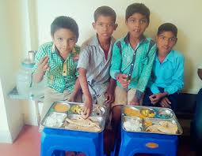
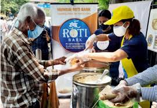
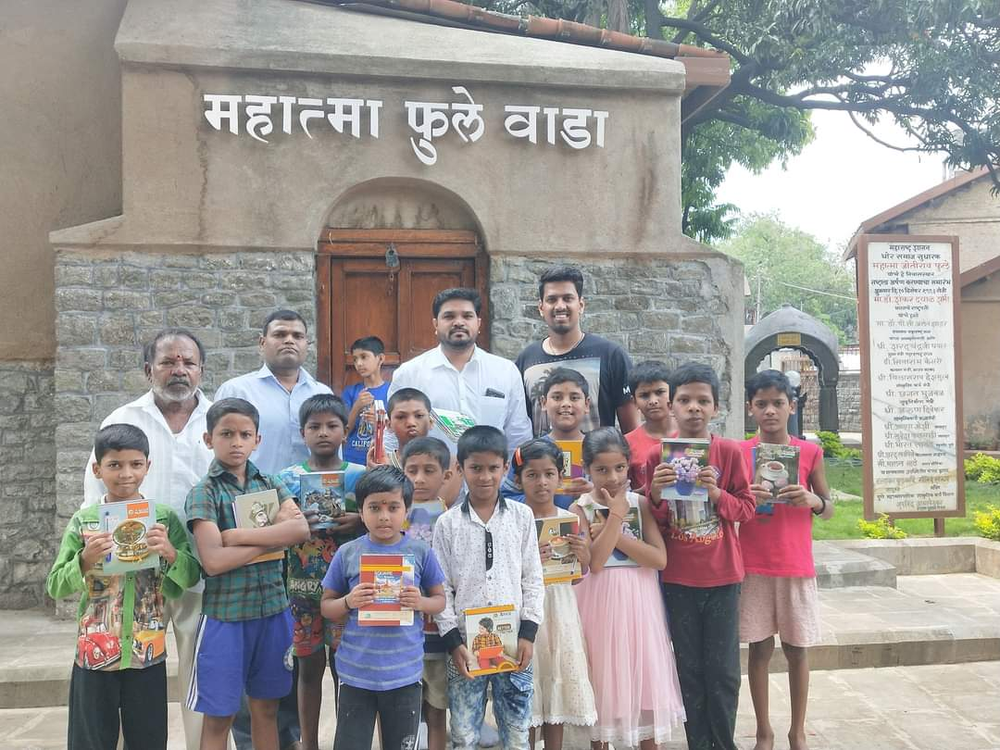
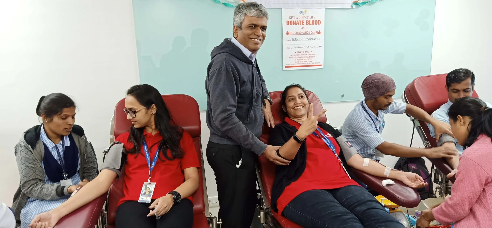
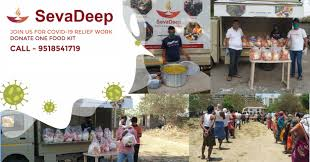

Goodwill India

This is your chance to earn goodwill with community, feel good about helping someone in need, and uplift those who are not as fortunate as you.
India is a country where we find extreme contrasts of wealth and poverty co-exist in everyday life. We understand peoples needs are very diverse and they span a wide spectrum because of ages and family structures. We attempt to bridge this gap between the rich and the poor by fulfilling their day to day basic needs through a systematic and disciplined structure of orginasation.
MORE ABOUT:

Roti Bank

Roti Bank India started this service in 2012 and ever since that day our whole team is working on our goal of “कोई भूखा न सोये”.
Roti bank is a non – profit organization which focus on working for the relief of the people and help them sleep in the night after a proper meal. Rotibank believe that one day we will finally reach a stage where no one is devoid of basic food at least twice a day.. Rotibank is purely dedicated to the service of poor and needy people.MORE ABOUT:
Give For Pune

This organization not only collects and distributes clothes, toys, computers, books etc but also ensures that they reach the right people in the right condition.
The minimal cost incurred in repairing donations and making them use-worthy is what they charge when they distribute these things. These reparations generate employment and further help the society. You can call them in order to have them pick up large donations or drop off your boxes at their collection points at these places. MORE ABOUT:
Share with India

Share with India is a non-profit organization committed to addressing key social and humanitarian challenges in pune.
Founded in 2014 , we have been actively working to uplift underserved communities and improve livelihoods through our various programs and initiatives. MORE ABOUT:
Deenanath Mangeshkar Hospital Blood Bank

Always ensure safety of the donors and safety of patients.
We continually undertake awareness and education programs on the need for blood donation.Hold Blood Donation Camps in offices, factories, colleges and sociol voluntary organizations. Maintain a large Registry of Blood Donors of all blood groups for normal Blood Donation and SDP Donation. MORE ABOUT:
SevaDeep

Donate children with special needs.
Many families want to donate their household goods but don’t know how to go about their donation. On this platform, people can donate used and new items such as furniture, clothes, appliances, household items, and more to NGOs of their choice . MORE ABOUT: